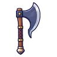
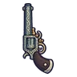
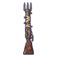

อัศวินโล่หลุมศพ
มอนธาตุอมตะ Lv 38–52
เจอที่
| แมพ | โซน | Lv | ภูมิภาค |
|---|---|---|---|
| สุสานใต้ดิน ชั้น 1 | 38–44 | ป่ากองไฟ | |
| สุสานใต้ดิน ชั้น 2 · ห้องราชา | 46–52 | ป่ากองไฟ | |
| หอรากมืด (Dark Root) | ห้องกระดูก | 24–33 |
ค่าสถานะตามเลเวล
| Lv | HP | ATK | DEF | MDEF | EXP | Job |
|---|---|---|---|---|---|---|
| 38 | 6,758 | 72–109 | 23 | 7 | 54 | 41 |
| 45 | 10,907 | 88–132 | 27 | 8 | 63 | 47 |
| 52 | 16,199 | 101–152 | 31 | 9 | 72 | 54 |
ตีด้วยธาตุไหนดี
แรงขึ้น: ศักดิ์สิทธิ์ ×1.5 ไฟ ×1.25
เบาลง: พิษ ×0 มืด ×0 อมตะ ×0
วัตถุดิบที่ดรอป
| ของ | โอกาส | |
|---|---|---|
| เศษป้ายหลุมศพ | 55% | 1 ชิ้น (15% ได้ 2) |
อุปกรณ์ที่ดรอป (7)
| ของ | โอกาส |
|---|---|
 ขวานเคราเหล็ก | 0.25% |
 ปืนพกคู่ดวลเหล็กกล้า | 0.25% |
 ลูกซองปะชุนซอมบี้ | 0.25% |
| ชุดผีเสื้อราตรี (เสื้อ) | 0.15% |
| ชุดผีเสื้อราตรี (กางเกง + รองเท้า) | 0.15% |
| 0.12% | |
| ชุดผีเสื้อราตรี (เข็มกลัดผีเสื้อราตรี) | 0.05% |
สกิล
ทุบพื้น (Lv 25+) · ทุบพื้น (Lv 60+) · ดึง (Lv 60+)